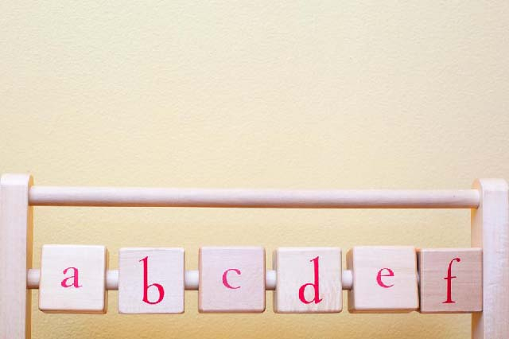
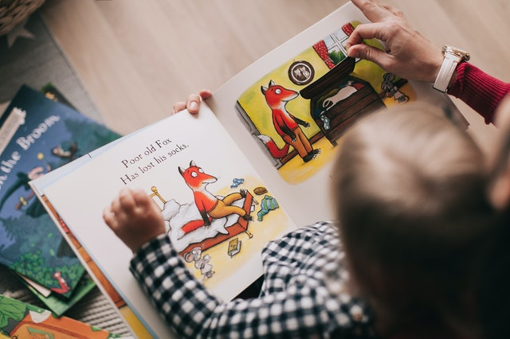
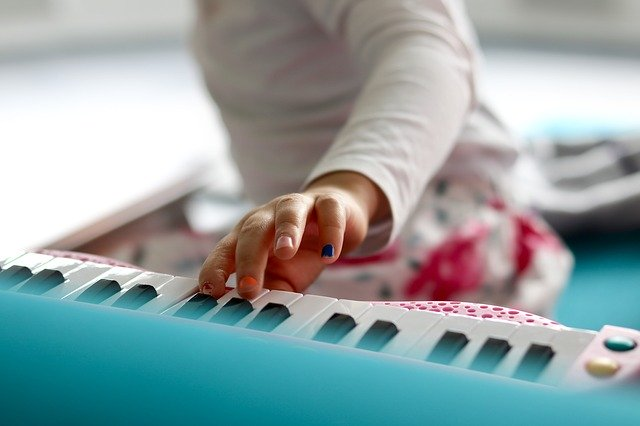
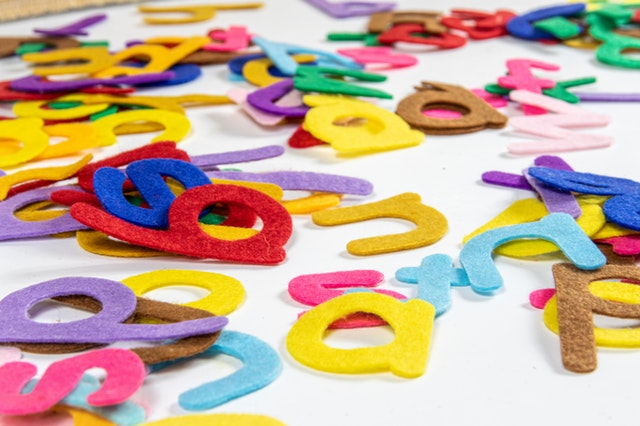

זאת טעות נפוצה של ההורים לחשוב שכל הילדים צריכים להתחיל לדבר באותו גיל, כשהאמת היא, שהגיל שבו הילד מתחיל לדבר משתנה מאוד בין ילדים.
קודם כל לפני שנכנסים ללחץ, חשוב שתדעו שכל ילד מתחיל לדבר בקצב שלו. משך הזמן שלוקח לילד שלכם להתחיל לדבר, לא ישפיע על ההתפתחות שלו מאוחר יותר. למעשה, ישנם ילדים שלומדים לדבר מאוחר באופן יחסי אך מתפתחים מהר יותר מאחרים.
באופן אידיאלי, עד גיל שנה וחצי, אוצר מילים סביר לילד שלכם נחשב כאוצר מילים הכולל בין 6 ל-20 מילים. אם לקראת גיל 3 הילד עדיין אינו מובן לסביבתו רוב הזמן, כדאי לקחת אותו לייעוץ.
הרבה הורים מחכים לראות איך העניין יתפתח, בתקווה שזה יעבור או שהילד ידביק את הפער לבד. חשוב לדעת שעיכוב בדיבור יכול לנבוע מסיבות שונות שלא קשורות לגיל ולכן מומלץ בכל מקרה לפנות לרופא ילדים.
מרוב דאגה, לפעמים הורים אף שוכחים לשים לב ליכולת ההבנה של הילד בתקשורת, שהיא בפני עצמה חשובה לא פחות מהיכולת לדבר. חוץ מלהגיד כמה מילים, הנה סימנים שיכולים להראות לכם שהילד שלכם נכון לתקשר:
- הילד מצביע על חפצים שהוא רוצה ומשמיע קולות בעת ההצבעה לעברם. זהו סימן חזק לכך שהילד רוצה לתקשר איתכם.
- הילד מבין כמה מילים ואפילו שתי מילים יחדיו כמו "תביא לי".
- היכולת של הילד להבין הוראות פשוטות כמו "תביא את הנעליים שלך". הוא יביא לכם את הנעליים או חפצים אחרים שביקשתם ממנו.
- בזמן משחק, הילד ממלמל לעצמו. זה ישמע כמו דיבור מכיוון שהוא משנה את האינטונציה של קולו כדי להביע משמעות.
במשפחתון ריינבו באשדוד מעודדים את הילד לדבר בשפה הרוסית. בגלל שהמשפחתון דובר רוסית ונחשב כמשפחתון רוסית. אך כאמור, כל ילד מתחיל לדבר בקצב שלו.
חלק מהפעילות במשפחתון ריינבו כוללת פעילויות המכוונות לתקשורת. בין היתר באמצעות שירים, הקראת ספרים וטכניקות במשחקים המשלבים ביטויים שונים ומעודדים את הילד להתבטא.
המשפחתון גם משתף פעולה באופן מלא עם ההורים לגבי התפתחות הילד ובעת הצורך ממלא טופס למכון להתפתחות הילד שמסופק ע"י קופות החולים, אשר מסייע לרופא הילדים להבין טוב יותר איפה עומד הילד מבחינת התפתחות הדיבור וההבנה ואם קיים איחור בהתפתחות בתחומים אחרים מלבד הדיבור.
הנה כמה טיפים של משפחתון ריינבו באשדוד שאתם יכולים להתחיל ליישם בבית כדי לעודד את הילד לדבר:
מחמאות ודוגמה
החמיאו לילדכם בעת ניסיון הדיבור וחזרו אחרי המילה שנאמרה, בצורתה התקינה. בדרך הזאת אתם מעצימים את הביטחון העצמי שלו והילד לומד לחקות נכון יותר את המילים.
קריאה ועיון בספרים
הרבו בקריאה ועיון משותף בספרים. התחילו בספרים פשוטים ולאחר מכן ספרים עם משפטים קצרים. כמו כן ספרים עם תמונות פשוטות (אוטו, בית, פרח, פרפר...) מהווים קישור שהילד יכול לזכור בין תמונה למילה ובכך לחזור על המילים בעצמו שוב ושוב.
שירים
השמיעו ושירו לילדכם שירי ילדים. השירים והקצב מעודדים את הילד להביע את עצמו.
שאלות פתוחות
נסו להחליף שאלות של כן ולא בניסוח שאלות שיעודדו את הילד שלכם להשיב לשאלה במילים.
הצבעה על חלקי גוף

למדו את הילד להצביע על חלקי גוף תוך כדי אמירת שמם. המטרה היא שילדכם יצביע על מספר חלקי גוף לפי בקשה כמו ראש, עין, אוזן. היתרון בתרגיל הזה הוא שניתן לחזור עליו גם בהיעדר צעצועים וחפצים אחרים שהילד מכיר מהבית, למשל בזמן שאתם והילד נמצאים מחוץ לבית.
ליווי יומי בדיבור

ניתן ללוות בדיבור כל פעולה יומיומית שאתם עושים עם הילד כמו הלבשה ומקלחת תוך כדי שאתם מסבירים את הפעולה ומתאימים את מורכבות המשפט כך שיהיה קרוב ליכולת החיקוי של הילד. רצוי לחבר בין הדיבור לפעולה. לדוגמה "מורידים נעליים" בעת הורדת נעליים, "פותחים שמפו" בעת פתיחת השמפו ברחצה וכו'.
לסיום, זכרו שמומלץ לפנות לרופא מוקדם אם אתם חושבים שקיימת בעיה בהתפתחות הדיבור. התערבות מקצועית מוקדמת חשובה ועשויה לעזור לילדכם מאוד.